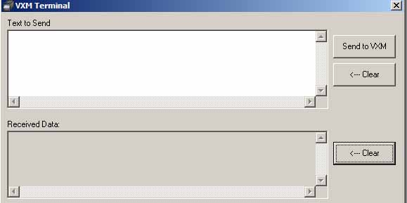

The VXM Terminal in COSMOS allows users to send commands directly to the VXM (see VXM Users Manual for commands) by entering the commands in the “Text to Send” window and then pressing the “Send to VXM” button. The replies received from the VXM will appear in the Received Data window. If there is a need to clear the characters from either of the windows, the user can press the “<---Clear” button for that window.